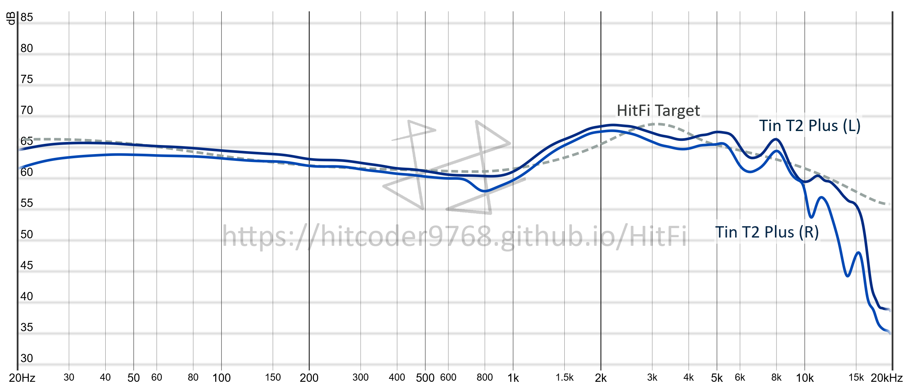
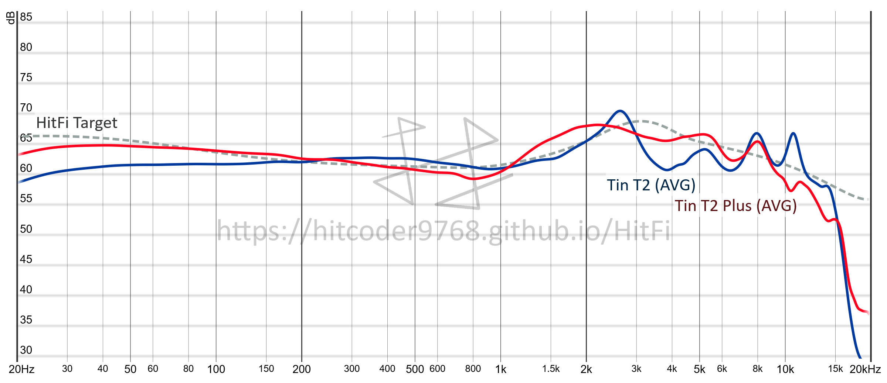

TinHiFi T2 Plus
Intro
The TinHiFi T2 Plus is supposedly a third successor to the original T2.
It manages to impress me even now, with how neutral and inoffensive it sounds, surpassing my expectations once again. Though, sadly the T2 Plus is not to my tastes enough for me to be able to use it regularly.
Design
The design is (in my humble opinion) much improved from the original T2's, with a more rounded and smooth feeling housing, which seems to sit better in my ears, and seal better too.
The cable provided is also much thicker and sturdier than the original, though still uses the usual MMCX connectors. The cable also includes pre-moulded ear hooks, which for this kind of design I very much appreciate having.
The housing of the T2 Plus is also heavier than the original, but not to any unpleasant extent, and can be comfortable in my ears for long periods of time.
As the housing is comfortable and seals well, and the cable provided is good, I'm happy to give these a 7/10. Improvements would mostly consist of a more tightly braided cable and maybe an L-shaped jack or something, but the latter is more down to preference.
Tuning
The tuning of the T2 Plus is, as expected, very neutral sounding. The sub-bass does not extend as far as I would like, but that's more of a personal gripe than anything.
The mids sound great on these, and the upper mids are tuned very pleasantly, seeming to be very natural and accurate sounding.
The treble doesn't extend the furthest, but is decent enough to make the T2 Plus moderately exciting to listen to, with some extra detail brought to the forefront over other contenders in the same budget range.

Strangely enough, these are not all that similar to the original T2. The bass extension seems to go a tad further than the original, with more emphasis on the midbass than the low mids where the original T2 seemingly tackles this the other way around. In addition, the upper mids feel a little more accurate on the T2 Plus, with more balance. The treble is also a little tamer on the T2 Plus, with a lower amplitude above 7kHz, and less extension overall.

Overall, well tuned, moslty tonally accurate, and a good balance between detail and comfortable listening, though can be mildly cold sounding at times. 7/10
Value
The T2 Plus is priced at around $60, which is a little above the majority of things presented here thus far. That being said, it performs well in the price bracket, probably being one of the most tonally accurate you can find, and having better detailing than a lot of alternatives. Additionally, it is one of the best of its kind in the sub-200 price bracket, being pretty close to neutral (if with a slightly warm tilt), which is uncommon in this budget range.
Thus, I give the T2 Plus an 8/10 in value, simply for being the best of its kind you can get for the price, and still maintaining that achievement a little upwards of that.
Summary
Pleasantly tuned and neutral sounding, the tonality is almost spot on. Not for everyone, can be percieved as cold/anemic.
Score: 73